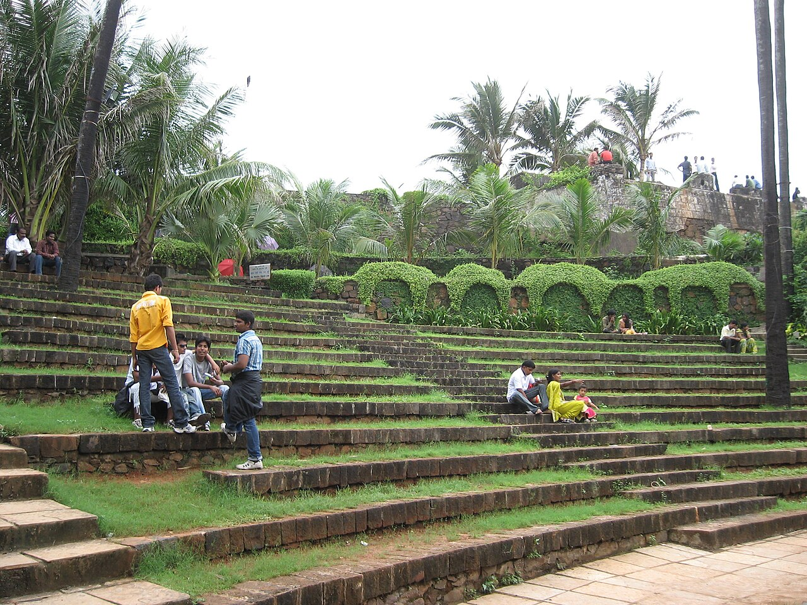

The Story
This chapter is waiting for its story.
Chapter 4 of 28 · 1980 – 1985 · St. Stanislaus High School, Bandra, Mumbai
School years at St. Stanislaus, and taking up Shotokan Karate.
What was happening while this chapter was being lived.

St. Stanislaus High School, Bandra, Mumbai View larger map © OpenStreetMap contributors
Personal pictures from this chapter — to be added.
This chapter is waiting for its story.